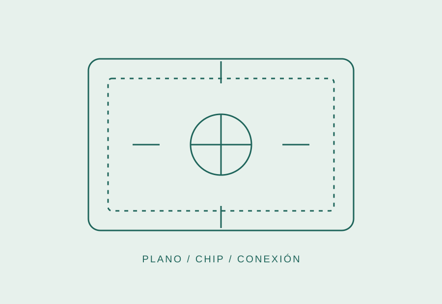

Enlace neuronal
Canal cifrado entre el chip y los servidores de Snailware.
InteliBook / 02
Una libreta inteligente para escribir, dibujar y diagramar con la velocidad de tu pensamiento.

El sistema
El chip de interfaz detecta patrones de intención y los envía a nuestra infraestructura de interconexión. Allí, modelos de IA procesan la señal para elegir la representación más precisa.
El resultado llega a InteliBook como una composición editable: palabras, formas, líneas y relaciones espaciales.
Infraestructura
Canal cifrado entre el chip y los servidores de Snailware.
IA contextual que distingue texto, dibujo, esquema y necesidad.
La información interpretada vuelve a InteliBook lista para trabajar.